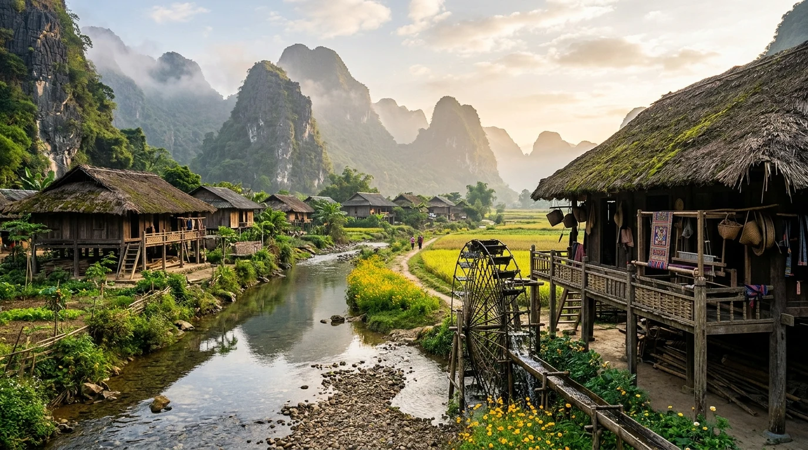
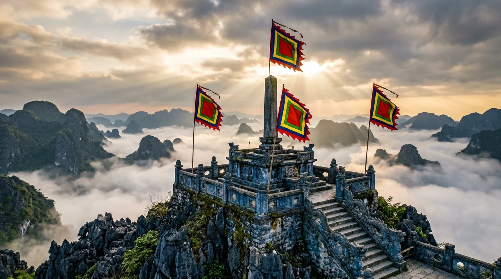
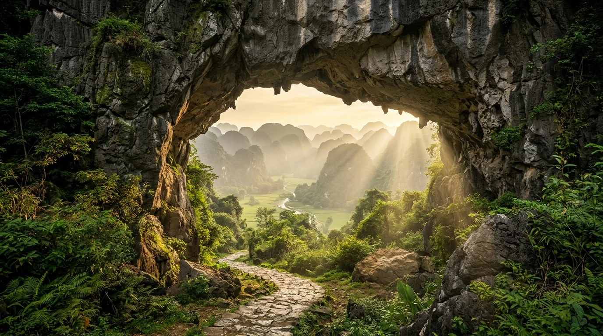
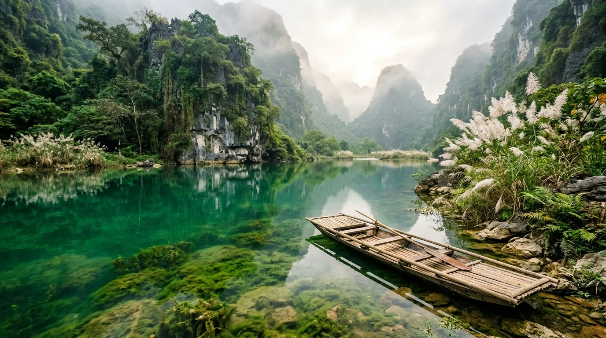

🧭 1. Tổng quan điểm đến
Khác biệt hoàn toàn với không khí sôi động, tấp nập tại các bến thuyền trung tâm Tràng An hay Tam Cốc, Thung Ui mở ra một không gian thiền định, tĩnh mịch và thoát tục đến kỳ lạ. Được bao bọc 360 độ bởi những dãy núi đá vôi tai mèo sừng sững hình thành qua hơn 250 triệu năm kiến tạo địa chất, thung lũng tựa như một "ốc đảo cổ tích" tách biệt hoàn toàn khỏi nhịp sống ồn ào hiện đại.
Thung Ui sở hữu hệ sinh thái rừng ngập nước và thảm thực vật karst phong phú, nơi những đàn chim le le, le nước, cò trắng chao lượn trên mặt hồ tĩnh lặng. Sự kết hợp hoàn mỹ giữa trầm tích lịch sử ngàn năm thời Vạn Thắng Vương Đinh Bộ Lĩnh và cảnh sắc thiên nhiên nguyên sơ biến nơi đây thành điểm dừng chân không thể thiếu trong hành trình khám phá di sản cố đô Ninh Bình.
📜 2. Vị trí địa lý & Dấu ấn lịch sử Đàn Kính Thiên năm 968
Về mặt địa giới hành chính, Thung Ui tọa lạc tại địa phận xã Gia Sinh, huyện Gia Viễn, tỉnh Ninh Bình. Nơi đây sở hữu vị trí chiến lược đặc biệt, nằm tiếp giáp giữa quần thể Chùa Bái Đính (cách khoảng 3km) và Cố đô Hoa Lư (cách khoảng 8km), tạo nên thế chân kiềng tam giác di sản vững chãi trong vùng lõi Quần thể Danh thắng Tràng An.
Theo sử liệu ghi chép trong Đại Việt Sử Ký Toàn Thư và các tài liệu khảo cổ học cố đô, sau khi dẹp yên loạn 12 sứ quân, thống nhất giang sơn về một mối vào năm Mậu Thìn (968), Đinh Bộ Lĩnh lên ngôi Hoàng đế (Đinh Tiên Hoàng), đặt tên nước là Đại Cồ Việt và định đô tại Hoa Lư. Để khẳng định quyền tự chủ dân tộc, đứng ngang hàng với các hoàng đế phương Bắc, Vua Đinh đã cho lập Đàn Kính Thiên (Đàn Tế Trời Đất) trên một thế đất cao ráo, hội tụ linh khí non sông giữa lòng thung lũng karst hiểm trở.
Đàn Kính Thiên tại Thung Ui ngày nay được phục dựng trang nghiêm dựa trên các cứ liệu lịch sử và kiến trúc tế lễ cổ truyền phương Đông "Trời tròn - Đất vuông". Công trình gồm 3 tầng đàn tế bằng đá xanh nguyên khối chạm khắc rồng mây thời Đinh - Tiền Lê: tầng trên cùng hình tròn tượng trưng cho Trời (Thiên), tầng giữa hình vuông tượng trưng cho Đất (Địa), và tầng dưới cùng dành cho con người (Nhân). Nơi đây là minh chứng sống động cho tinh thần độc lập tự cường và khát vọng thái bình thịnh trị của nhà nước phong kiến trung ương tập quyền đầu tiên của dân tộc.
🐉 3. Huyền thoại & Truyền tích dân gian vùng đất
Thung Ui từ xa xưa đã được các bô lão trong vùng lưu truyền nhiều huyền tích dân gian kỳ bí, gắn liền với địa thế thung lũng karst lòng chảo khép kín chỉ có một lối vào duy nhất:
- Truyền tích Hậu Cứ Bí Mật Quân Đội Vua Đinh: Tương truyền, địa hình lòng chảo Thung Ui bốn bề vách đá dựng đứng hiểm trở từng được nghĩa quân Đinh Bộ Lĩnh chọn làm căn cứ bí mật để tích trữ lương thảo, luyện tập cung tên và nuôi dưỡng chiến mã trước khi xuất quân dẹp loạn 12 sứ quân.
- Huyền tích Giếng Tiên & Hồ Ngọc Bích: Dân gian truyền rằng mặt hồ trong vắt giữa thung lũng vốn là nơi các tiên nữ hạ phàm thưởng ngoạn cảnh sắc non bồng nước nhược vào những đêm trăng rằm sáng vằng vặc. Nước hồ quanh năm mát lành, chưa bao giờ cạn đáy ngay cả giữa những mùa đại hạn.
- Cổng Thiên Môn & Triết Lý Tam Tài: Cổng vòm đá karst tự nhiên sừng sững nơi cửa ngõ thung lũng được coi là "cổng trời" trấn giữ long mạch. Đi qua cổng Thiên Môn là bước vào cõi thanh tịnh an lạc, rũ bỏ hết mọi muộn phiền bụi bặm trần gian.
🌸 4. Chuỗi hình ảnh 4 mùa du lịch tuyệt mỹ
Khí hậu Thung Ui mang tính chất đặc trưng của vùng lòng chảo nhiệt đới gió mùa miền Bắc, với 4 mùa chuyển sắc rõ rệt tạo nên những bức tranh thủy mặc đắm say lòng người:



📸 5. Top 10 Thắng cảnh biểu tượng & Dấu tích lịch sử
Khám phá trọn vẹn 10 tọa độ check-in và dấu ấn khảo cổ - di sản tuyệt mỹ làm nên sức hút đặc biệt của Thung Ui:

1. Đàn Kính Thiên (Đàn Tế Trời Đinh Tiên Hoàng) — Biểu Tượng Khai Quốc 968
Tọa lạc uy nghiêm trên đỉnh non thiêng cao nhất thung lũng, Đàn Kính Thiên phục dựng chuẩn mực tam cấp đá xanh chạm khắc rồng mây thời Đinh - Tiền Lê, nơi Vạn Thắng Vương tế cáo Trời - Đất định đô lập quốc Đại Cồ Việt.

2. Cổng Thiên Môn Đá Tự Nhiên
Cổng vòm đá tự nhiên rêu phong theo triết lý Tam Tài kết nối cõi thực và cõi tiên giữa sương mây mờ ảo.
3. Đài Kính Địa & Rừng Cổ Thụ
Không gian đài tế mặt đất bằng đá xanh rêu phong, nơi con người bày tỏ lòng tri ân sâu nặng với mẹ thiên nhiên đất mẹ.

4. Trải Nghiệm Bè Tre Du Ngoạn Hồ Ngọc Bích — Chốn Bồng Lai Thoát Tục
Mặt hồ xanh ngọc bích phẳng lặng như chiếc gương khổng lồ soi bóng vách đá tai mèo. Du khách ngồi trên bè tre truyền thống nhẹ trôi theo làn nước trong vắt nhìn thấu rong rêu, cảm nhận sự an yên tuyệt đối.
5. Bản Mường & Nhà Sàn Cổ
Tái hiện nếp sống của đồng bào Mường cổ vùng chuyển tiếp Ninh Bình — Hòa Bình với nếp nhà sàn mái cọ, cối giã gạo nước róc rách.
6. Cầu Đá Băng Lạch Nước
Cây cầu đá uốn cong bắc ngang lạch suối ngầm karst tự nhiên, hai bên cỏ cây rêu phong đậm phong vị cổ trang.
7. Quần Thể Rừng Cổ Thụ & Thung Lũng Karst Khép Kín 270ha
Hệ sinh thái rừng trên núi đá vôi nguyên sinh hàng trăm năm tuổi với nghiến, lát hoa và thảm dược liệu nam quý giá, lá phổi xanh thanh khiết của vùng di sản Cố đô.
8. Động Tiên Thung Ui
Hang động karst tự nhiên với nhũ đá muôn hình vạn trạng lấp lánh như kim cương, gắn liền truyền tích tiên nữ giáng trần.
9. Cây Ước Nguyện Cổ Thụ
Cây si đại thụ nghìn năm bám rễ sâu vào vách đá, nơi du khách buộc dải lụa đỏ thắm cầu an, may mắn cho gia quyến.
10. Trục Kết Nối Di Sản Thung Ui — Chùa Bái Đính & Cố Đô Hoa Lư
Thung lũng Thung Ui đóng vai trò mắt xích kết nối văn hóa - lịch sử hoàn hảo trong Quần thể Tràng An, chỉ cách Bái Đính 3km và Hoa Lư 8km tạo nên tam giác di sản vàng của du lịch Cố đô Ninh Bình.
🚗 6. Cẩm nang di chuyển & Cung đường giao thông
Nhờ hệ thống giao thông cao tốc hiện đại kết nối trực tiếp Hà Nội với Ninh Bình, hành trình đến Thung Ui vô cùng thuận tiện và nhanh chóng:
- Từ Hà Nội: Di chuyển theo tuyến Cao tốc Pháp Vân — Cầu Giẽ — Cao Bồ — Mai Sơn (~90km, khoảng 1 giờ 20 phút chạy xe ô tô). Ra khỏi nút giao Gia Miêu / Mai Sơn, rẽ vào Quốc lộ 1A rồi đi theo ĐT477 hướng Chùa Bái Đính.
- Từ Chùa Bái Đính: Thung Ui chỉ cách cổng Tam Quan Chùa Bái Đính khoảng 3km, đường nhựa áp phan bằng phẳng, xe ô tô 45 chỗ và xe máy đều tiếp cận tận cổng thung lũng an toàn.
- Từ Cố đô Hoa Lư: Đi theo đường Tràng An — Bái Đính khoảng 8km, cung đường uốn lượn ven chân núi karst tuyệt đẹp.
| Phương tiện | Thời gian di chuyển | Mức giá ước tính | Đặc điểm & Lời khuyên |
|---|---|---|---|
| Xe Limousine VIP 9-11 chỗ | 1h20 - 1h30 | 150.000 - 180.000 VNĐ / vé | Đón trả tận nơi tại Hà Nội và khu vực Bái Đính / Tràng An. Ghế massage êm ái, rất phù hợp cho gia đình. |
| Ô tô cá nhân / Thuê xe tự lái | 1h15 - 1h30 | Xăng dầu & phí BOT ~250.000 VNĐ | Chủ động lịch trình, bãi đỗ xe tại Thung Ui rộng rãi, an ninh tốt, có nhân viên hướng dẫn. |
| Xe máy phượt | 2h00 - 2h15 | Xăng xe ~70.000 VNĐ | Cung đường QL1A cũ qua Phủ Lý ngắm cảnh đồng quê, phù hợp bạn trẻ yêu thích tự do khám phá. |
🍲 7. Tinh hoa ẩm thực đặc sản Cố đô & Bản Mường
Khám phá Thung Ui không thể trọn vẹn nếu bỏ qua những phong vị ẩm thực trứ danh của vùng đất Cố đô và đồng bào Mường bản địa:


🎟️ 8. Bảng giá vé tham quan & Dịch vụ du lịch niêm yết
Cập nhật bảng giá vé tham quan và các dịch vụ trải nghiệm tại Thung Ui theo quy chuẩn công khai minh bạch của Sở Du lịch Ninh Bình:
| Hạng mục dịch vụ | Mức giá niêm yết | Chi tiết quyền lợi & Ghi chú |
|---|---|---|
| Vé vào cổng tham quan & Đàn Kính Thiên | 100.000 VNĐ / người lớn | Bao gồm tham quan Đàn Tế Trời, Cổng Thiên Môn, Đài Kính Địa, Động Tiên và Bản Mường (Trẻ em dưới 1m2 miễn phí). |
| Vé trẻ em (từ 1.2m - 1.4m) | 50.000 VNĐ / vé | Áp dụng cho trẻ em đi kèm gia đình hoặc đoàn học sinh tham quan ngoại khóa lịch sử. |
| Trải nghiệm Bè tre Hồ Ngọc Bích | 150.000 VNĐ / chuyến (tối đa 4 khách) | Du ngoạn 30 - 45 phút trên bè tre truyền thống quanh hồ, trang bị áo phao an toàn 100%. |
| Thuê Cổ Phục Việt check-in (Việt Phục thời Đinh - Lê - Lý) | 80.000 - 150.000 VNĐ / bộ | Đầy đủ phụ kiện nón lá, quạt trầm, trâm cài tóc cổ trang, chụp ảnh cực đẹp tại Đàn Tế Trời. |
| Hướng dẫn viên thuyết minh lịch sử | 300.000 VNĐ / tour | Thuyết minh viên bản địa kể chi tiết về lịch sử khai quốc năm 968 và kiến trúc Đàn Kính Thiên. |
| Phí gửi xe | 10.000 VNĐ / xe máy • 30.000 - 50.000 VNĐ / ô tô | Bãi xe kiên cố có mái che, nhân viên bảo vệ trông giữ 24/7. |
🧭 9. Gợi ý lịch trình & Mẹo trải nghiệm bản địa an toàn
Gợi ý Lịch trình 1 Ngày: Khám Phá Thung Ui & Quần Thể Chùa Bái Đính
Sáng: 07h00 xuất phát từ Hà Nội theo cao tốc Mai Sơn. 08h30 đến Thung Ui. Dâng hương Đàn Kính Thiên, check-in Cổng Thiên Môn đá tự nhiên và chụp ảnh cổ phong. 10h00 trải nghiệm du ngoạn bè tre Hồ Ngọc Bích ngắm làn nước trong vắt.
Trưa: 11h30 thưởng thức bữa trưa bản Mường với thịt dê nướng tảng, cơm cháy sốt dê và cá suối kẹp tre.
Chiều: 13h30 di chuyển 3km sang Quần thể Chùa Bái Đính, chiêm bái Bảo Tháp Xá Lợi, hành lang 500 tượng La Hán và ngắm hoàng hôn buông xuống Cố đô trước khi trở về Hà Nội lúc 17h00.
Gợi ý Lịch trình 2N1Đ: Tam Giác Vàng Di Sản: Cố Đô Hoa Lư — Thung Ui — Tràng An
Ngày 1: Thăm Cố đô Hoa Lư (Đền Vua Đinh - Vua Lê) -> Chiều khám phá Thung Ui, dâng hương Đàn Kính Thiên 968, đi bè tre Hồ Ngọc Bích -> Tối nghỉ ngơi tại resort sinh thái Gia Sinh.
Ngày 2: Sáng sớm đi thuyền Quần thể Di sản Tràng An (Tuyến 2 hoặc Tuyến 3 xuyên thủy) -> Chiều ghé đỉnh Ngọa Long Hang Múa ngắm toàn cảnh Tam Cốc trước khi kết thúc hành trình.
Mẹo an toàn & Trải nghiệm bản địa văn minh:
- Trang phục tôn nghiêm tại Đàn Kính Thiên: Đàn Tế Trời là nơi thiêng liêng tưởng nhớ công ơn Vua Đinh Tiên Hoàng tế cáo trời đất, du khách nên mặc trang phục lịch sự, kín đáo qua đầu gối khi dâng hương lễ Phật.
- Tuân thủ an toàn áo phao trên bè tre: Hồ Ngọc Bích có nhiều vị trí ngầm karst sâu, luôn cài khóa áo phao bảo hộ đúng cách khi bước xuống bè tre và không đứng lên làm chòng chành bè.
- Giày dép di chuyển: Các bậc thang đá dẫn lên Đàn Kính Thiên và Cổng Thiên Môn được tạo tác từ đá tự nhiên, hãy chuẩn bị giày thể thao hoặc giày leo núi đế cao su có độ bám dính tốt.
- Giữ gìn vệ sinh môi trường karst: Không vứt rác, vỏ chai nhựa hay tàn thuốc vào lòng hồ và các hốc đá để bảo tồn trọn vẹn cảnh quan di sản thiên nhiên thế giới.